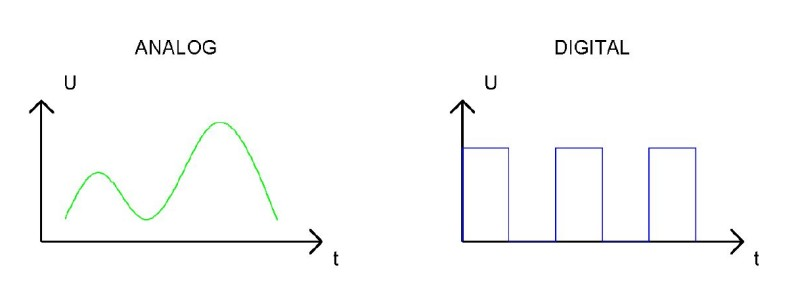
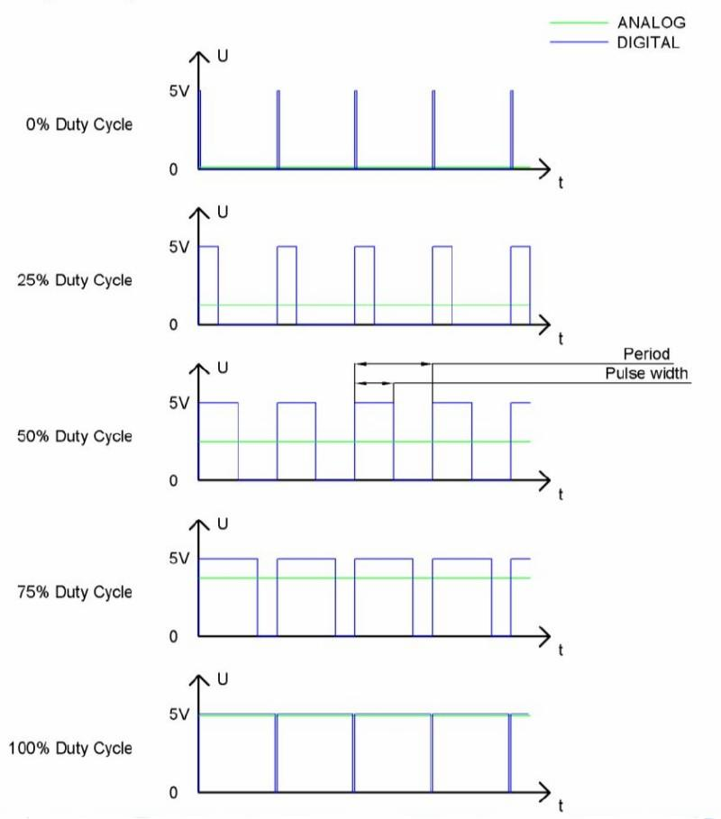
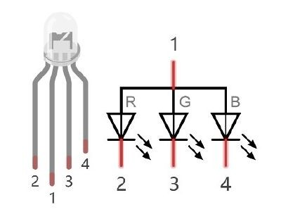
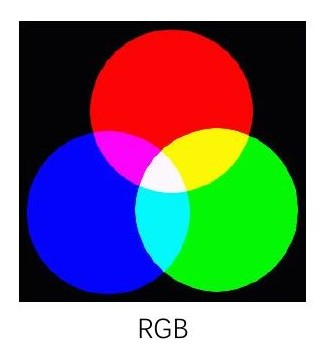
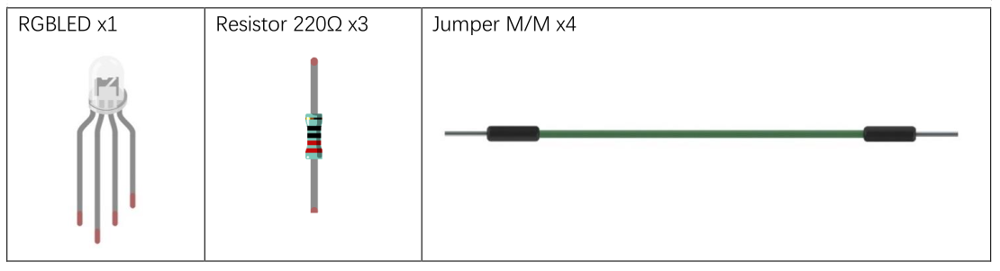
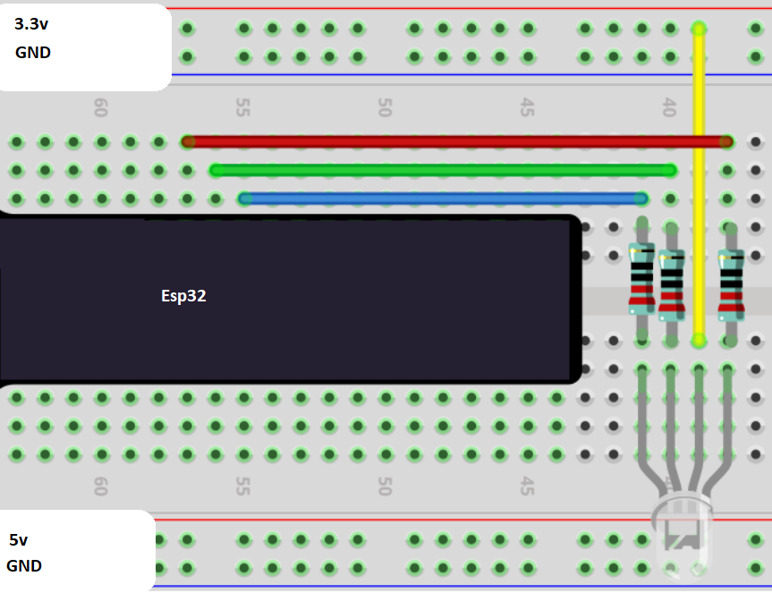

Analog && PWM
In questa sezione cercheremo di capire la (semplice) differenza fra segnali digitali e analogici e come essi possano essere realizzati e gestiti nelle nostre composizioni.
Un segnale analogico è un segnale continuo nel tempo e nella variazione di valore, mentre un segnale digitale è un segnale discreto nel tempo e nella variazione di valore.
La figura spiega molto chiaramente il concetto espresso:

In informatica ed elettronica si utilizzano molto spesso i segnali digitali binari identificati con 0 e 1, mentre ovviamente i segnali
analogici hanno un range ben definito (ad esempio, fra 0 e A, per qualche A positivo e neanche troppo grande).
Ovviamente esiste praticamente sempre un sistema di conversione dei segnali da digitale ad analogico e viceversa.
Pulse Width Modulation
PWM è una tecnologia che permette di utilizzare segnali digitali per controllare circuiti analogici. L’idea è quella di alternare per un certo periodo i segnali digitali 0 e 1, calcolando la percentuale di tempo in cui il segnale sta a 1: quell’informazione è detta duty cycle.
È chiaro che PWM non è una reale trasformazione di un segnale da digitale ad analogico, ma che calcolando l’energia trasportata nel periodo di pulsazione si riesce ad approssimare con efficacia la quantità analogica da rappresentare.

Esistono dispositivi hardware (a costi accessibili) in grado di implementare un grado di accuratezza fino a 10 bit, che significa distinguere fino a 1024 valori analogici diversi.
L’implementazione di PWM dell'ESP32 ha 8 canali separati, ognuno dei quali può gestire la frequenza in maniera indipendente, cioè ognuno dei Pin di output PWM sono configurabili a frequenze diverse.
Per comprenderne il funzionamento, facciamo un esempio con il led programmabile (GPIO 5):
import machine
import time
# il led da gestire
ledPin = machine.Pin(5)
# tempo di attesa in millisecondi
# varia questo numero per aumentare/diminuire la velocità di illuminazione del led
ms_time = 100
# l'oggetto per la gestione del PWM
# richiede:
# - l'oggetto fisico su cui applicare il PWM (nel nostro caso, il led)
# - la frequenza in ms del pwm
pwm = machine.PWM( ledPin, 10000)
while True:
# qui si carica...
for i in range(0,1023):
pwm.duty(i)
time.sleep_ms(ms_time)
# ...qui si scarica.
for i in range(0,1023):
pwm.duty(1023 - i)
time.sleep_ms(ms_time)
# ripulisce l'oggetto del PWM
pwm.deinit()
Breathing LED
Con "Breathing LED" si intende un LED che cambia la sua intensità luminosa in maniera continua e controllata. Il materiale necessario e schema circuitale sono gli stessi di qualunque progetto con un LED! Quello che cambia qui è il pin (che deve supportare il PWM) e il codice di gestione, che andiamo subito a vedere!
from machine import Pin,PWM
import time
pin = Pin(xxx, Pin.OUT)
pwm = PWM( pin,10000)
# provate a modificare questo valore per osservare il cambio di comportamento
sleep_time = 1
while True:
for i in range(0,1023):
pwm.duty(i)
time.sleep_ms( sleep_time )
for i in range(0,1023):
pwm.duty(1023-i)
time.sleep_ms( sleep_time )
pwm.deinit()
Componenti: RGB LED
Un led RGB non è altro che un led in grado di generare 3 differenti colori. Attivando i tre colori insieme e mescolandoli opportunamente con tecniche PWM è possibile sostanzialmente ottenere qualsiasi colore.

SINTESI ADDITIVA (RGB)
La sintesi delle luci: se punti una luce rossa nello stesso punto di una luce verde, vedi una luce colore giallo!
I colori fondamentali di questa sintesi sono Rosso (Red), Verde (Green), Blu (Blue).
La somma dei 3 colori fondamentali fa il BIANCO!!!
Ogni colore fondamentale "costa" un byte, quindi ogni colore "pesa" 3 byte, ovvero sono rappresentabili 2 alla 24 colori diversi:
circa 16 milioni di colori!
Il web utilizza questa sintesi dei colori.
La sua rappresentazione è data dai 3 byte, tipicamente indicati con la sintassi esadecimale #RRGGBB
Questa sintassi indica che i primi 2 numeri esadecimali rappresentano il byte che indica la quantità di rosso presente,
i secondi la quantità di verde, gli ultimi la quantità di blu.
Ad esempio:
#FF0000 rappresenta il rosso
#00FF00 rappresenta il verde
#0000FF rappresenta il blu
#000000 è il nero
#FFFFFF è il bianco
#888888 è un grigio
#ADADAD è un grigio più chiaro
#FF8888 è un rosso chiaro
...

LED RGB
Nel nostro progetto andiamo a comporre un circuito con i seguenti componenti:

Organizziamo il circuito in questo modo:

Infine testiamo il seguente codice:
import machine
import random
import time
pinR = machine.Pin(xxx, Pin.OUT)
pinG = machine.Pin(yyy, Pin.OUT)
pinB = machine.Pin(zzz, Pin.OUT)
pwmR = machine.PWM(pinR,10000)
pwmG = machine.PWM(pinG,10000)
pwmB = machine.PWM(pinB,10000)
while True:
rPerc = random.randint(0,1023)
gPerc = random.randint(0,1023)
bPerc = random.randint(0,1023)
pwmR.duty(rPerc)
pwmG.duty(gPerc)
pwmB.duty(bPerc)
time.sleep_ms(200)
pwmR.deinit()
pwmG.deinit()
pwmB.deinit()
Esercizi
Semaforo
Implementare un semaforo con un unico LED RGB: ogni 3 secondi la luce passa in maniera continua da verde a giallo, poi dopo altri 3 secondi da giallo a rosso e dopo altri 3 secondi da rosso a verde.
E poi si ricomincia.
Modificare il progetto in modo da poter decidere liberamente la durata delle luci verde, gialla, rossa.
Luci Alternate
Implementare un progetto con 2 luci LED semplici. Le luci si alternano in senso continuo, in modo che la somma dei 2 duty cycle sia sempre 100.
Modificare il codice per fare in modo che ogni luce sia completamente accesa (e l’altra completamente spenta) per 3 secondi.
LED e Pulsante
Implementare un progetto con un pulsante e un LED. Il led è inizialmente spento. Quando si clicca il pulsante, il led inizia ad accendersi fino ad essere completamente acceso, poi inizia a spegnersi e continua ad alternare le due fasi in maniera continua.
Quando si clicca di nuovo il pulsante, l’avanzamento si interrompe e la luce rimane ferma. Quando si clicca di nuovo la luce riparte dal punto in cui si era precedentemente fermata.
Caricamento barra dei LED
Implementare un progetto con una barra dei led. Ogni led si accende dopo un secondo e quando la barra è piena dopo un secondo ricomincia a spegnersi.